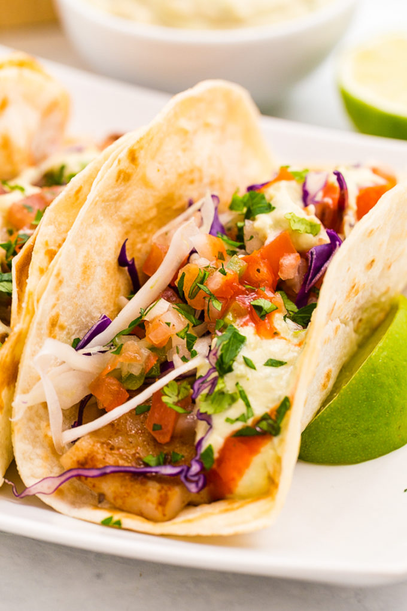

Fish Tacos

Description
This is one of my easy go to meals because of how amazing they always turn out. My wife and I have these at
least once a week because of how easy they are to make and how little clean up we have to do!
Things You'll Need
- 1lb. Tilapia
- Slap Ya Mama seasoning
- Your favorite blackened seasoning
- Pack of Pre-made Cole Slaw
- Yellowbird's "Jalapeno Condiment"
- Corn Tortillas
- Pickled Red Onions (optional)